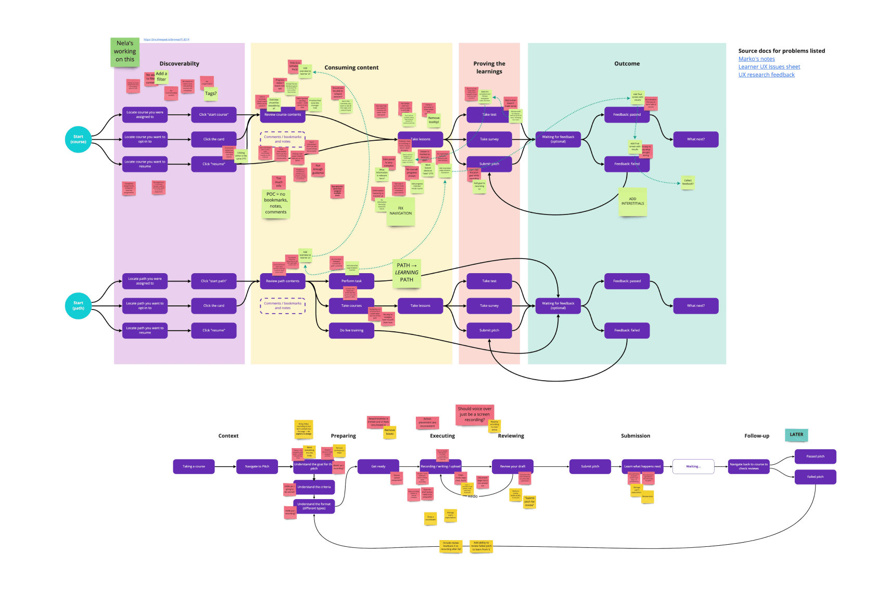

Q4 2022 – Q1 2023
Showpad Coach Redesign
Context
Courses and learning are one of the key offerings of the Showpad product. These came originally through the acquisition of LearnCore in 2018, well before I joined the company.
After the success of our Showpad Video projects, our team grew by a few people and was assigned a timeboxed project: to redesign the learning experience.
Problem
For several reasons, the experience of going through a course in Showpad didn’t change much between the acquisition of LearnCore and when I joined the company. That’s around four years without much care or attention — there was a lot of work to be done.
Many of the issues people had were well documented, which saved us a lot of time when it came to problem validation.
Most of the problems stemmed from a busy interface with confusing informational hierarchy, unclear navigation, little guidance, etc. Here's some direct quotes from customers.
“I always found strange that [...] we are mixing all information on the right panel.”
"[The] navigation is too nested.”
“I would expect to see information laid out in a left-to-right layout.”
“Understanding progression is very difficult.”
“I found it confusing that to go through the slides in a course I need to scroll. I kept clicking the arrow and missing content.”
Discovery and ideation
Even though the scope was relatively larger than what he had done with the Showpad Video redesign, we decided to employ a similar strategy: divide and conquer.
So once again, we mapped the user journey, assigned every issue identified during our research, and split it into chunks we could confidently tackle.
Final designs
After many rounds of iteration and validation, we ended up with the following offering:
Outcome
Progress on this project was unfortunately pushed back after the team was severely impacted by the Showpad layoffs of late 2022.
After a rocky period, progress has resumed and we're hoping to make this redesign available as a beta for select customers at the end of Q1 2023.